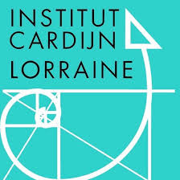

B i e n v e n u e
Naviguer sur se site vous permettra de découvrir comment, par qui et quand les animés ont été crées. Vous pourrez également trouver certaines informations qui pourront vous aider à découvrir l'évolution des animés et pourquoi pas je l'espère vous guider afin d'apprécier un nouveau genre de lecture ou des animés que vous ne connaitriez pas.
Attention car si vous n'avez pas vu un des animes que je vais citez il y a un risque qu'il y auras des
REMERCIEMENTS Je veux vous remercier de prendre le temps d'explorer mon site.
N.B. Ce site est basé sur mon expérience des animés, il se peut que vous ne soyez pas d'accord avec ce que je vais expliquer mais nous pouvons partager nos points de vues.
Réalisé dans le cadre du cours de 4TTi - WEB par Maxime Lentz